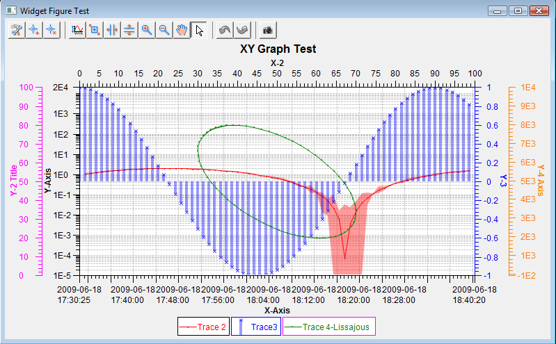

SWT XYGraph is an xy graph component based on SWT and Draw2D, which could be used not only in any SWT applications, but also has the ability to be integrated in any GEF based applications.
SWT XYGraph has most of the functionalities for an xy graph, plot or chart in the field of science and engineering:
|

SWT XYGraph is based on SWT and Draw2D, if you implement Eclipse plug-ins, SWT-based standalone applications or GEF based projects, SWT XYGraph would be the best candidate for your plot or chart functionality requirements.